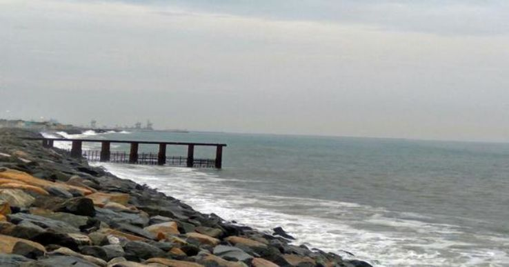
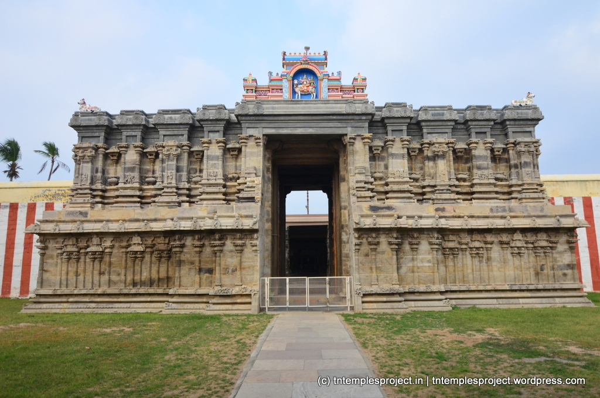
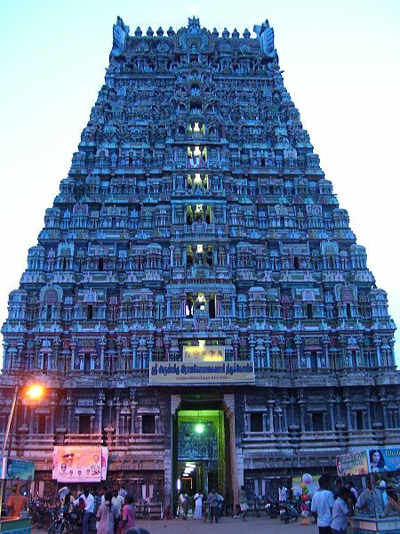
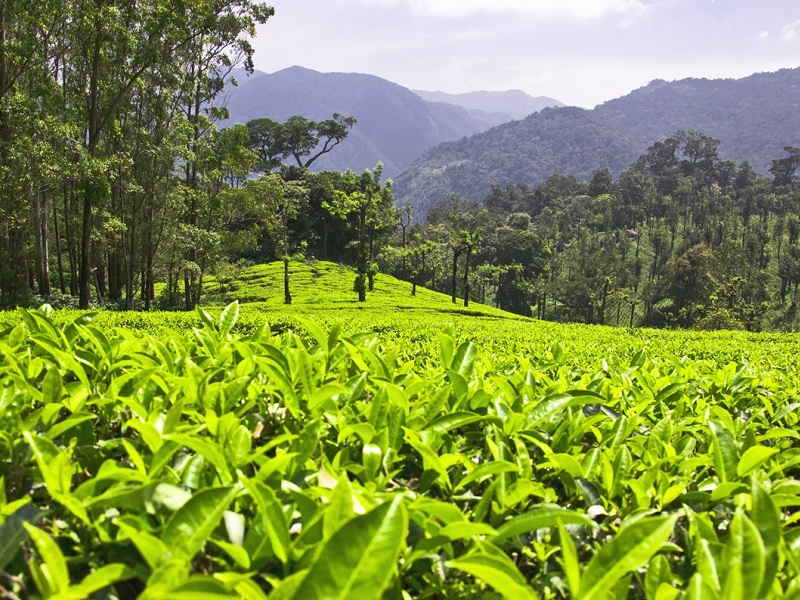
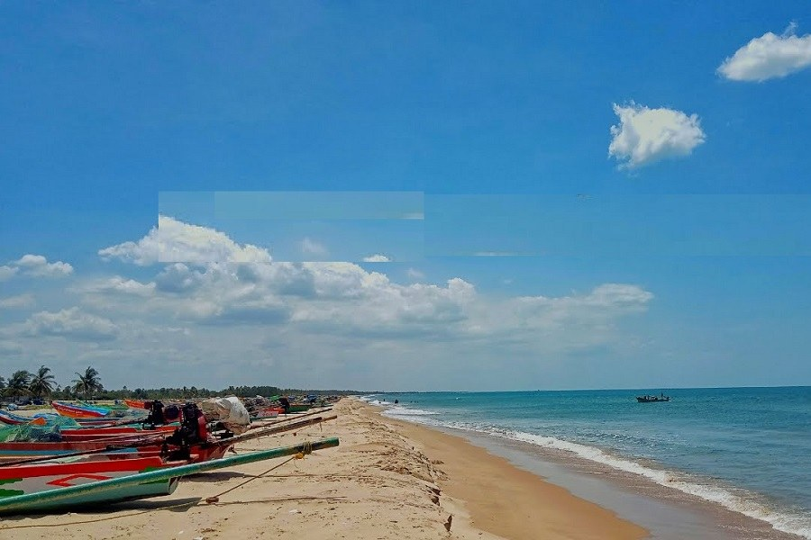
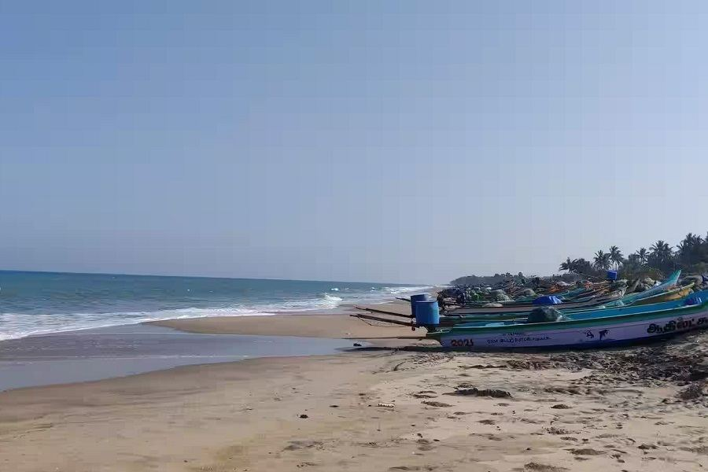
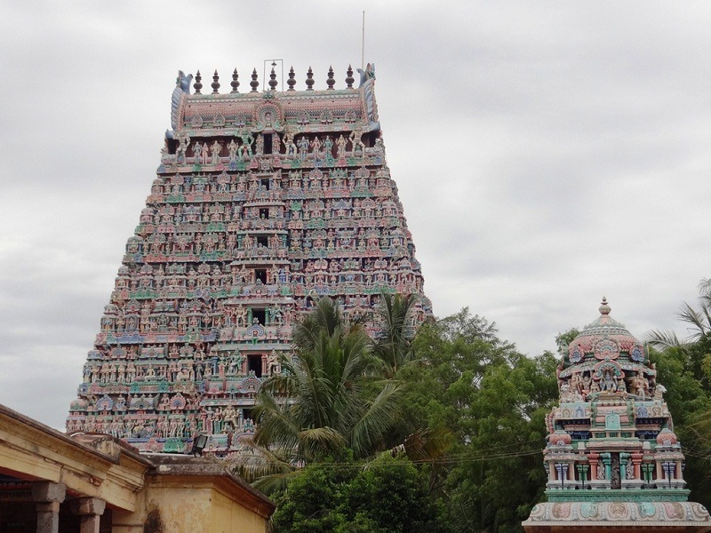
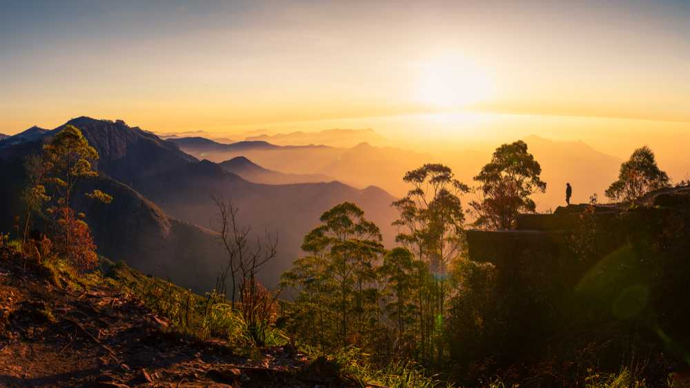
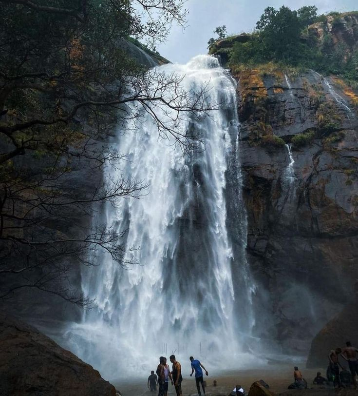
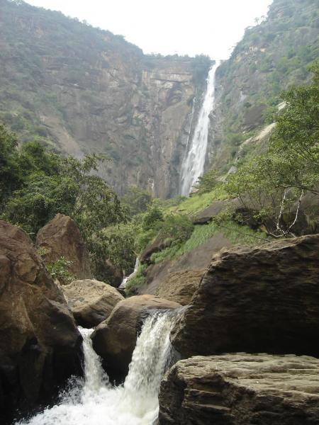

Silver Beach, located in Cuddalore, Tamil Nadu, is a popular destination known for its scenic
beauty
and recreational
activities. It's the second-longest beach on the Coromandel Coast
and stretches for 57 km. The beach
offers a mix of
soft sands, calm waters, and panoramic views,
making it ideal for swimming and leisurely walks. Key
points about Silver
Beach include
its proximity to Cuddalore (2 km away), the presence of Fort St. David, and the
nearby Pichavaram Mangrove
Forest.
1 Location:
Situated 2 km from Cuddalore city center.
2 Second Longest:
It's the second-longest beach on the Coromandel Coast.
3 Panoramic Views:
Offers stunning views of the Bay of Bengal.
4 Calm Waters:
Known for its mild waves, making it suitable for swimming.
5 Proximity to Mangroves:
The Pichavaram Mangrove Forest is a nearby attraction.
6 Historical Significance:
Features Fort St. David, a historic fort with colonial history.

The Sri Kailasanathar Temple in Srivaikuntam, dedicated to Lord Shiva, is a significant Hindu temple
known for its
unique architectural style and legends. It's the 6th of the Nava Kailasam temples and also one of the
Navagraha temples,
associated with the planet Saturn (Sani). The temple is renowned for its Suyambu Linga, the
self-manifested Lingam, and
its association with the Thamirabarani river.
1. Nava Kailasam and Navagraha:
The temple is the sixth in the series of nine Shiva temples known as Nava Kailasam, and it's also linked
to the planet
Saturn (Sani) in the Navagraha system.
2. Suyambu Linga:
The presiding deity, Lord Kailasanathar, is a self-manifested Lingam (Suyambu Linga), which is
considered highly
auspicious.
3. Architectural Significance:
The temple showcases Dravidian architecture with intricate carvings and sculptures, particularly those
from the Nayak
period.
4. Legends and Beliefs:
Several legends are associated with the temple, including one about Uroma Maharishi and another about a
three-horned
coconut.It's believed that worshipping here can alleviate the effects of Sani Dosha (Saturn's influence)
and bless
devotees with long life, wealth, education, and a strong mind.
5. Unique Features:
The temple boasts a west-facing shrine for Sivakami (Parvati), a hall with yali pillars, and sculptures
of various
deities like Vinayaka, Subramanya, Veerabhadra, and Nataraja. It also has a three-horned coconut
displayed as a
testament to a past miracle.

The Sri Rajagopalaswamy Temple in Mannargudi is a significant Vaishnavite temple dedicated
to Lord
Krishna, known as
Rajagopalaswamy. It's renowned for its impressive Dravidian
architecture, sprawling across 23 acres
with a towering
Rajagopuram. The temple features
numerous shrines, mandapams (halls), prakarams (enclosures), and
theerthams (sacred
tanks),
including the large Haridra Nadhi tank.
1. Size and Architecture:
The temple complex is vast, encompassing 23 acres, and is known for its Dravidian architectural
style. It features a
192-foot Rajagopuram, one of the tallest in Tamil Nadu.
2. Main Deity:
The presiding deity is Sri Rajagopalaswamy, an idol of Lord Krishna in a seated posture,
flanked by
his consorts Rukmini
and Satyabhama.
3. Sacred Tank:
The temple houses the Haridra Nadhi, one of the largest temple tanks in India, which is
used in
various rituals.
4. Historical Significance:
The temple has a rich history, with inscriptions indicating its construction and expansions
by
various Chola and Nayak
rulers.
5. Festivals:
The temple is known for its grand festivals, including the 18-day Panguni Brahmotsavam,
which
features a chariot
festival, and Vaikunta Ekadashi.

Manjolai Hills, a serene hill station in Tirunelveli, Tamil Nadu, is known for its tea estates, scenic
beauty, and
tranquil atmosphere. It's often compared to Ooty due to its pleasant climate and natural charm, earning
it the nickname
"Poor Man's Ooty".
1. Location and Elevation:
Situated at 1,162 meters (3,812 feet) above sea level, Manjolai Hills is located within the Kalakkad
Mundanthurai Tiger
Reserve, approximately 70 kilometers from Tirunelveli.
2. Tea Estates and Plantations:
Manjolai is famous for its sprawling tea gardens, where various tea varieties are grown. The Bombay
Burma Tea Estate is
a well-known plantation in the area.
3. Scenic Beauty and Viewpoints:
The hills offer stunning views of emerald green tea gardens, waterfalls, and dense forests. Kuthiravetti
is a popular
viewpoint known for its windy conditions and panoramic views.
4. Tourist Attractions:
Besides the tea estates, other attractions include Manimuthar Dam, Kakkachi Lake, and the Singampatty
Zamin Palace.
5. Best Time to Visit:
The ideal time to visit Manjolai Hills is between November and March, when the weather is most pleasant.
Trekking and
mountain climbing are popular activities for adventure enthusiasts.

Samiyarpettai Beach, located on the Coromandel Coast in Tamil Nadu, India, is a tranquil
beach known
for its serene
atmosphere and natural beauty. It's a popular spot for relaxation,
offering golden sand, clear blue
waters, and lush
green surroundings. The beach is also known for
the Sri Pinnai Vazhi Amman Shrine, a large temple
along the Cuddalore
coast.
1. Tranquil Atmosphere:
Unlike many crowded beaches, Samiyarpettai offers a peaceful and relaxing environment, perfect
for
those seeking
solitude.
2. Golden Sand and Blue Waters:
The beach is characterized by its beautiful golden sand and clear blue waters, creating a
picturesque setting.
3. Scenic Surroundings:
Lush green vegetation surrounds the beach, adding to its natural beauty and charm.
4. Sunrise and Sunset Views:
The beach is an excellent location for watching both sunrises and sunsets, with the horizon
providing a spectacular
view.
5. Sri Pinnai Vazhi Amman Shrine:
This temple is one of the largest along the Cuddalore coast and is a significant attraction for
visitors.
6. Ideal for Relaxation:
Visitors can enjoy sunbathing, walking, or simply relaxing while listening to the calming
sound of
the waves.

Parangipettai Beach, historically known as Porto Novo, is a coastal town in Tamil Nadu with
significant historical and
strategic importance. It was a major trading center, particularly for Arabs, and later colonized by the
Portuguese,
Dutch, and English. The beach itself is a popular spot for relaxation and offers a glimpse into the
town's rich past,
including the Battle of Porto Novo during the Second Anglo-Mysore War.
1. Historical Significance:
Parangipettai has a long history as a trading port, with evidence of Arab, Portuguese, Dutch, and
British influence.
2. Battle of Porto Novo:
The beach is the site of the Battle of Porto Novo, a key event in the Second Anglo-Mysore War, where
British forces
clashed with the Kingdom of Mysore.
3. Strategic Location:
Its location on the Coromandel Coast made it a crucial trading hub and a point of strategic importance
during colonial
times.
4. Fishing Village:
Today, Parangipettai is primarily a fishing village, contributing significantly to the state's seafood
production and
exports.
5. Relaxation and Scenic Beauty:
The beach offers a tranquil environment for relaxation and enjoying the natural beauty of the coastline,
making it a
popular spot for locals and tourists alike.

The Papanasam Ramalingeswarar Temple, also known as the 108-Lingam temple, is a significant
Hindu
temple in Papanasam,
Thanjavur district, Tamil Nadu, dedicated to Lord Shiva. It
is believed that Lord Rama worshipped
here to absolve his
sins after the war in Lanka. The temple
is known for its unique feature of 108 Shiva Lingas within
the main shrine and
its west-facing
orientation, which is believed to enhance the divine power.
1. Rama's Penance:
The temple's name, Ramalingeswarar, signifies Lord Rama's worship of Lord Shiva to cleanse
himself
of sins after the war
with Ravana.
2. 108 Shiva Lingas:
A unique feature of the temple is the presence of 108 Shiva Lingas within the main shrine,
making it
a powerful
pilgrimage site where devotees can worship at 108 temples in one place.
3. West-Facing Orientation:
The temple faces west, and all 108 Lingams also face west, which is believed to amplify the
temple's
spiritual power and
facilitate prayers.
4. Ramayana Connection:
The temple's architecture and the presence of shrines dedicated to Hanuman (Anjaneyar) and
Sugriva,
important figures
from the Ramayana, further connect it to the epic.
5. Kamadhenu's Presence:
Uniquely, the divine cow Kamadhenu is also present in the temple, alongside Nandi, symbolizing
the
divine cow's
importance in Hindu mythology and its connection to the temple's history.

Perumal Peak, also known as Perumalmalai Peak, is a prominent landmark in Kodaikanal, Tamil Nadu, and a
popular
destination for trekking and nature lovers.
1. Highest Peak:
It is the highest peak in the Perumalai Hills, a part of the Western Ghats mountain range, with an
elevation of 2,234
meters (7,329 feet).
2. Trekking Destination:
Perumal Peak is well-known for trekking, with a well-defined trail starting from Neutral Saddle near
Perumal Malai
village.
3. Beginner-Friendly Trek:
The trek is considered suitable for beginners, though caution is advised on steep sections.
4. Panoramic Views:
The peak offers breathtaking views of the Western Ghats, the Nilgiri Hills, and the surrounding
landscape.
5. Local Beliefs:
Local lore suggests that the peak was once a volcano that became dormant

Agaya Gangai Falls, a 300-foot waterfall in Kolli Hills, Tamil Nadu, is accessible by descending
about 1,300 steps. The
falls are formed by the Panchanathi stream. Important points to note
include the challenging trek
down and back up the
steps, the potential for slippery conditions
during the monsoon, and the need to carry water and
snacks.
1. Height and Formation:
The waterfall is 300 feet high and is formed by the Panchanathi stream, which flows through
the
Kolli Hills.
2. Temple Proximity:
The falls are located near the Arappaleeswarar Temple, adding to the site's religious significance.
3. Accessibility:
Reaching the falls requires descending and ascending approximately 1,300 steps, making it
a
moderately challenging
trek.
4. Safety Precautions:
During the monsoon season, the steps can be slippery, so it's important to wear appropriate
footwear
and exercise
caution.
5. Best Time to Visit:
The best time to visit is between November and March, and starting early in the day is
recommended
to avoid crowds and
enjoy the cooler temperatures.
6. Essential Items:
Carry sufficient water and snacks, as there are limited options available near the falls. Also,
bring extra clothes as
you may get wet.

Thalaiyar Falls, also known as Rat Tail Falls, is a significant waterfall located in the Palani Hills of
Dindigul
district, Tamil Nadu. It's the highest waterfall in Tamil Nadu and the sixth-highest in India, with a
height of 297
meters (974 feet).
1 Highest in Tamil Nadu: Thalaiyar Falls is the tallest waterfall in the state of Tamil Nadu.
Sixth Highest in India: It ranks as the sixth-highest waterfall in India.
2 Rat Tail Name: It's also known as Rat Tail Falls due to its appearance when viewed from a distance,
resembling a long,
thin rat's tail.
3 Location: The falls are situated in the Palani Hills, part of the Western Ghats, within the Dindigul
district.
4 Accessibility: It's considered inaccessible to the general public as there are no roads leading
directly to the falls,
but it can be reached by trekking.
5 Trekking: A challenging 6 km trek is required to reach the falls, which takes around 2-3 hours one
way.
6 Viewpoint: A viewpoint at Dum Dum Rock on the Batalugundu-Kodaikanal Ghat Road provides a distant view
of the
falls.